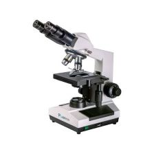
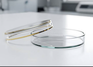

Materials and Procedure
The materials used and procedure followed for this project
Materials
- Scalpel
- Twenty 100mm petri dishes, Carolina Biological
- Planaria, G. tigrina, Carolina Biological
- Beef liver to feed the planaria
- Spring water
- Erythritol
- Microscope
- Metric Scales
Step |
Description |
Image |
|---|---|---|
1 |
Gather Materials for Experiment
|
 |
2 |
Set up the Experimental Environment
|
 |
3 |
Begin the Data Collection Process
|
 |
4 |
Data Collection
|
|
5 |
Data Analysis
|